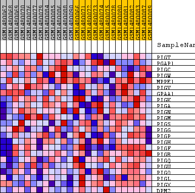
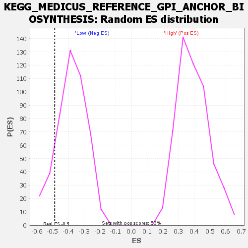

Profile of the Running ES Score & Positions of GeneSet Members on the Rank Ordered List
| Dataset | WG6v3.MRPL3.cls#High_versus_Low.MRPL3.cls#High_versus_Low_repos |
| Phenotype | MRPL3.cls#High_versus_Low_repos |
| Upregulated in class | Low |
| GeneSet | KEGG_MEDICUS_REFERENCE_GPI_ANCHOR_BIOSYNTHESIS |
| Enrichment Score (ES) | -0.48806754 |
| Normalized Enrichment Score (NES) | -1.2814822 |
| Nominal p-value | 0.12820514 |
| FDR q-value | 1.0 |
| FWER p-Value | 1.0 |
| SYMBOL | TITLE | RANK IN GENE LIST | RANK METRIC SCORE | RUNNING ES | CORE ENRICHMENT | |
|---|---|---|---|---|---|---|
| 1 | PIGT | PIGT | 1720 | 0.070 | -0.0149 | No |
| 2 | PGAP1 | PGAP1 | 2275 | 0.055 | 0.0144 | No |
| 3 | PIGC | PIGC | 3563 | 0.034 | -0.0162 | No |
| 4 | PIGW | PIGW | 4419 | 0.025 | -0.0342 | No |
| 5 | MPPE1 | MPPE1 | 5700 | 0.015 | -0.0843 | No |
| 6 | PIGV | PIGV | 5996 | 0.013 | -0.0856 | No |
| 7 | GPAA1 | GPAA1 | 6033 | 0.013 | -0.0739 | No |
| 8 | PIGK | PIGK | 7790 | 0.005 | -0.1592 | No |
| 9 | PIGA | PIGA | 8478 | 0.002 | -0.1920 | No |
| 10 | PIGN | PIGN | 12024 | -0.011 | -0.3636 | No |
| 11 | PIGM | PIGM | 12303 | -0.012 | -0.3655 | No |
| 12 | PIGS | PIGS | 12371 | -0.012 | -0.3560 | No |
| 13 | PIGG | PIGG | 12523 | -0.013 | -0.3500 | No |
| 14 | PIGP | PIGP | 13683 | -0.020 | -0.3887 | No |
| 15 | PIGH | PIGH | 15559 | -0.036 | -0.4477 | Yes |
| 16 | PIGF | PIGF | 16343 | -0.045 | -0.4403 | Yes |
| 17 | PIGB | PIGB | 16432 | -0.047 | -0.3955 | Yes |
| 18 | PIGQ | PIGQ | 16798 | -0.052 | -0.3594 | Yes |
| 19 | PIGU | PIGU | 17729 | -0.070 | -0.3337 | Yes |
| 20 | PIGO | PIGO | 17831 | -0.073 | -0.2622 | Yes |
| 21 | PIGL | PIGL | 18433 | -0.095 | -0.1936 | Yes |
| 22 | PIGX | PIGX | 18582 | -0.103 | -0.0932 | Yes |
| 23 | DPM2 | DPM2 | 18953 | -0.130 | 0.0242 | Yes |

